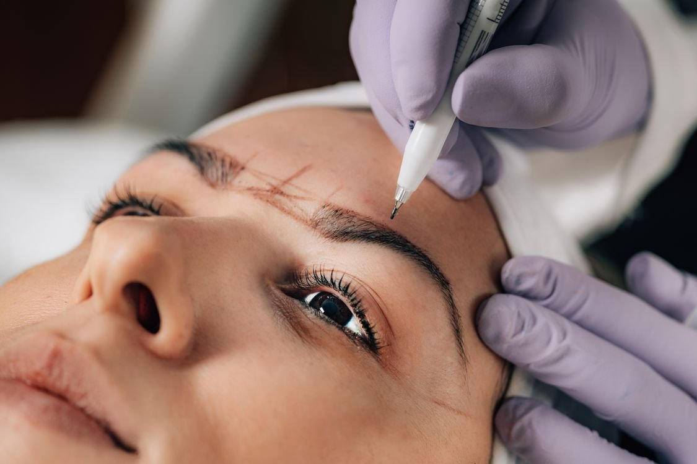
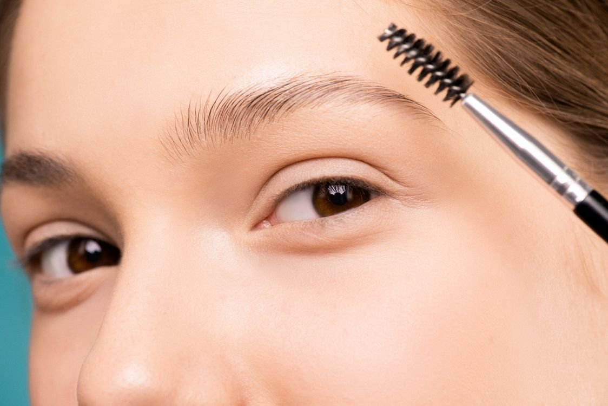
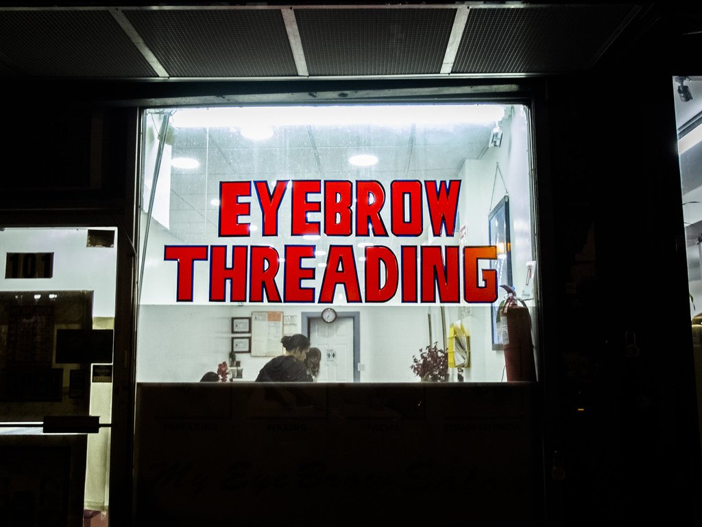
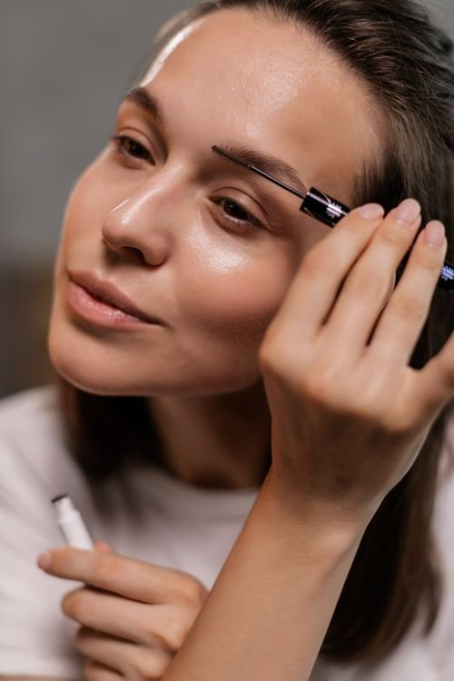

10 Days, 3 Signs, 1 Check for Your Ombre Brows
You walk out of your brow appointment in Miramar at 2 in the afternoon, catch your face in the car mirror in the bright South Florida sun, and your heart drops a bit. Your new ombre brows look dark. They look bold. They look like someone drew them on with a marker, even though in the chair, an hour ago, the shape was just right. You think: did I make a mistake? Almost every client thinks that on day one. And almost every one of them is wrong. Fresh ombre brows are not healed ombre brows. The color you see on day one will soften a lot as your skin heals. This post walks the whole road, day by day, so each stage feels known when it shows up on your face: the first 10 days in detail, the 3 signs of healthy healing, and the 1 check to run before you judge the result.
Ombre brows heal on the surface in about 7 to 10 days, and the full color settles in about 4 to 6 weeks. Day 1 and 2 look dark and bold, often about 30 to 50 percent darker than the healed result. Days 3 to 7 bring light flaking and itch as the top skin sheds. Around days 8 to 14 the brows can look too light, like the color left. That fade is normal: new skin is covering the pigment. The color comes back in weeks 3 and 4, softer than day one, and the true result is judged at week 4 to 6, with a touch-up visit if your plan calls for one.
What the video shows: The video is called "Powder Brows: The Process & Technique." Ombre brows and powder brows are two names for the same family of brow work: pigment placed in soft layers to give a shaded, powder-like finish, darker at the tail and lighter at the front. The video shows the process itself, step by step, so you can see how the soft shading is built: the brow is shaped first, then the pigment is laid in with fine passes, layer by layer, not in one hard block of color. That matters for healing. Because the color sits in soft layers, the fresh result still looks bold on day one, and the video helps you see why: fresh pigment on fresh skin always reads darker than the healed, settled color will. Watching the technique first makes the healing stages in this post make sense. The brows were built soft. They just need the weeks to show it.
First, what are ombre brows, in plain words?
Ombre brows are a semi-permanent brow service. Semi-permanent means the color lasts a long time but fades over time; it is not for life. A trained brow artist places pigment, which is fine colored powder used in the skin, into the top layers of the skin with a small machine. The color is built darker at the tail of the brow, the outer end, and lighter at the front, near the nose. That fade from light to dark is what ombre means: a soft shift from one shade to the next.
The healed look is like soft brow powder makeup, the kind you might brush on in the morning, only it stays through sweat, rain, and a Miramar summer day. How long it lasts changes from person to person, based on skin type, sun, and care. Your artist can talk through what to expect for your skin at your consult. What this post covers is the part right after: the healing.
One word on who does the work and where. This is pigment in skin. It should be done by a trained artist, in a clean shop, with clean, single-use tools for each client. If any part of a shop's setup looks off to you, it is fine to ask questions, and fine to walk out. Your face is not the place for a leap of faith.
What do your brows look like on day 1 and day 2?

Day 1: your brows look bold, dark, and sharp. The shape looks bigger than you picked, and the color looks deeper than the shade you chose. The skin around the brows may look a bit pink, and the area can feel tender, like a light sunburn. Some clients see a small bit of clear fluid on the brows in the first hours. That fluid is a normal part of how skin starts to heal.
Day 2: the brows often look even darker. This is the peak dark day for many people. The pigment is fresh, the top skin is starting to dry, and the color sits on show. If you have an event, a photo, or a big work day, do not plan it for day 2. Plan your appointment so days 1 and 2 fall on calm days if you can.
Here is the math that calms most clients. Healed ombre brows are often about 30 to 50 percent lighter than the day 1 look. Say day 1 color reads as a 10 out of 10 in darkness. A 40 percent drop takes it to a 6 out of 10. 10 minus 4 is 6. That 6 is close to what you and your artist picked. The dark brow in the mirror is not the brow you bought. It is the brow plus fresh skin, fresh pigment, and day-one swelling of the look. Judge nothing on day 2.
Care on days 1 and 2 is simple. Keep the area clean. Follow the exact care steps your artist gave you; artists vary a bit in what they advise, and your artist saw your skin up close. In general: do not touch the brows with unwashed hands, do not put makeup on them, and do not soak them in water. Sleep on a clean pillow case. Try to sleep on your back so your face does not press into the pillow all night.
What happens on days 3 to 5, when the flaking starts?

Around day 3, the top skin starts to dry and form a light crust. The brows can feel tight. An itch often starts. That itch is a sign of healing skin. It is also the first big test: do not scratch, and do not pick.
Days 4 and 5: light flakes begin to lift and fall on their own. Where a flake falls, the color under it looks lighter. So the brows can look patchy: dark in one spot, light in the next. Patchy at day 5 is normal. The flakes do not all fall on the same day, so the color does not even out on the same day either.
Why must flakes fall on their own? This is the hardest idea in the post, so we will say it two ways.
Picture tale one. Think of a scab on a scraped knee. If you pick a scab off early, the skin under it is raw, and the spot can heal with a mark or a light patch. The brow flakes are the same kind of cover. Under each flake, your skin is still sealing the pigment in. Pick the flake, and you can pull pigment out with it.
Picture tale two. Think of paint on a wall with a sheet of plastic over it while it dries. If you peel the plastic and drag it across wet paint, the paint smears and lifts in streaks. Let it dry and lift the sheet with care, and the paint stays smooth. Your flakes are the sheet. Your pigment is the paint. Time, not fingers, does the clean lift.
So the rule for days 3 to 7 is one line: hands off, let them fall. If a flake hangs by a thread, leave it. It will fall in the shower steam or on your pillow. If the itch is strong, ask your artist what they allow on the area. Do not invent a cream of your own and put it on healing pigment work.
What happens on days 6 to 10, and why do the brows look like they faded away?

Days 6 and 7 are peak flake days for many clients. More of the crust lifts. The brows may itch less as the top layer finishes shedding. By day 7 to 10, most of the flakes are gone.
Then comes the stage that scares people most: the ghost stage. Ghost stage is the name brow artists use for the days, often around days 8 to 14, when the brows look too light, like the color is gone or never took. Here is what is really going on. After the flakes fall, a fresh layer of new skin has grown over the pigment. New skin is a bit cloudy. It sits over the color like a thin white veil. The pigment is still there, under the veil. You just can not see it at full strength yet.
As the new skin matures over weeks 2, 3, and 4, it turns more clear. The color shows through again, bit by bit. Artists call this the color coming back, or blooming. It does not come back as dark as day 1. It comes back as the soft, healed shade you picked, often in the 30 to 50 percent lighter range from day one.
So if you hit day 10 and think your brows have vanished, the right move is to wait, not to book a fix. No artist can judge healed color at day 10. The skin has not finished. Mark your calendar for week 4. That is the first honest look.
What do weeks 3 to 6 look like, and when is the touch-up?

Week 3: the color starts to even out. Spots that looked blank in the ghost stage fill back in. The brows look softer and more like makeup, less like fresh work. Small gaps can still show. Note them, but do not score them yet.
Week 4: for many clients, this is close to the true healed color. The shape reads clean. The front of the brow is light, the tail is deeper, and the ombre fade shows. If your plan includes a touch-up, it is often set around weeks 6 to 8, once the skin is fully healed. At the touch-up, the artist fills gaps, evens the color, and can go a bit darker or warmer if you and the artist agree. The touch-up is part of the plan, not a sign the first visit failed. Skin takes pigment in its own way, and the second pass is how the result gets fine-tuned.
Weeks 5 and 6: the color is settled. What you see now is the result you will live with as it fades slow over the long term. Sun is the big fader. In South Florida, sun is a daily fact, on a walk in Pembroke Pines or a beach day past Fort Lauderdale. Once your artist says the skin is fully healed, ask what sun care they advise for the brows. A hat is never a bad idea in the weeks after, and it keeps sun off healing skin too.
Here are the 3 signs of healthy healing, from the title. Sign 1: the change follows the order in this post. Dark, then flaking, then light, then color back. Stages in the right order are the best sign of all. Sign 2: both brows move through each stage at about the same pace. One brow a day ahead of the other is fine. One brow weeks behind is worth a call. Sign 3: the skin calms down over time. Tenderness, itch, and flakes should all fade as days pass, not grow.
And here is the 1 check. At week 4, in day light, look at your brows with no makeup on them. Is the shape the one you picked? Is the color soft, with a lighter front and a deeper tail? Are any gaps small spots, the kind a touch-up is made for? If yes, your healing did its job. Take a photo in that same light. That photo is your healed base line for all the months ahead.
What should you avoid while your brows heal?
Water and sweat: for the first 7 to 10 days, keep the brows as dry as your artist advised. Wash your face with care around the brows. Skip pools, the sea, saunas, and hard workouts that make you sweat a lot in that first stretch. November in Miramar is cooler than August, but a midday run here will still make you sweat. Plan your appointment in a calm week if you can.
Makeup and skin products: no makeup on the brows till your artist says the skin has closed, often about 10 days. Keep strong skin products off the brow area too: peels, scrubs, and brightening creams can lift color while the skin heals. Ask your artist before you restart any product near the brows.
Sun and tanning: keep healing brows out of strong sun. Do not tan the area. Sun on fresh pigment work can shift the color and slow the heal.
Picking and rubbing: it is worth saying twice. No picking at flakes. No rubbing with a towel. Pat your face dry. Let water run off in the shower; do not scrub the brow line.
Sleep: clean pillow case, and try to sleep on your back for the first nights. Face-down sleep rubs the brows for hours at the very stage when flakes need to fall on their own time.
When should you call your artist or see a doctor?
Call your artist if a stage looks far off the map in this post: one brow that stays bold dark at week 3 while the other has softened, a gap that is large, or color that looks like a tone you did not pick once week 4 has come. Artists would rather hear from you at week 4 with a photo than have you worry in silence till month 3.
Some signs are not an artist call. They are a doctor call, the same day. Skin that gets more red, hot, swollen, or sore as days pass, not less. Yellow crusts, pus, or a bad smell from the area. Fever. Red streaks moving out from the brow. These can be signs of infection, and infection needs medical care, not brow care. This is rare when work is done clean and care steps are followed, but rare is not never, and fast care is what keeps a small problem small. Do not wait on these signs to see if they pass.
Also tell your artist before your appointment, not after, if you are pregnant, if you take blood-thinning medicine, if you have a skin condition near the brows, or if you have had a bad reaction to pigment or numbing creams in the past. A good artist will tell you if the service should wait or change. That talk is part of the consult, and it protects your result.
When you book ombre brows at KuuStore in Miramar, the deposit is $25 for all services, applied in full toward your total, so your balance on the day is the service price minus $25. For drawn-on brows, the hand-drawn service with no pigment in the skin, the deposit is $5, also applied in full toward the total. If you are not sure which brow fits your life, that is a consult question, and it is a good one to ask before you book either.
Checklist:
- Plan your appointment so days 1 and 2, the darkest days, fall on calm days with no big event or photos
- Take a day 1 photo in day light, so you can track each stage against a base line
- Keep hands, makeup, and soaking water off the brows for the first 7 to 10 days, as your artist advised
- Let every flake fall on its own from day 3 to day 10: no picking, no scratching, no rubbing
- Sleep on a clean pillow case, on your back if you can, for the first nights
- Expect the ghost stage around days 8 to 14 and wait it out: the color is under new skin, not gone
- Run the 1 check at week 4 in day light with no brow makeup on, and photo the healed result
- Call the same day for medical care if redness, heat, swelling, or pain grows instead of fading
Your free tool for this step
Use the Bundle Price Checker on the KuuStore site: https://kuustore.life/bundle-price-checker.html
A bundle price checker is a page that adds up the cost of a set of items or services picked together, so you can see the full price of the set before you commit. KuuStore sells curated bundles: sets of beauty items grouped for you, in 3-item, 6-item, and 9-item sets. A checker lets you price a set as a set, not guess item by item.
Here is how to use it for this step. Your brows are healing, and you are in the wait-and-see weeks. This is a good time to plan what you will want once the heal is done: the soft brow products your artist allows after the skin has closed, and the care items for your other services, like your braids or nails. Open the checker. Build the set you have in mind. See the full price of the set at once. If the total is more than you planned, drop the set size down a step and check again. The math is in front of you before you spend a cent.
The checker does not order for you and does not hold items. It is a planning page. When you are ready, the order step is apart. What the checker does is stop the most common bundle mistake: falling for a set piece by piece, then meeting the real total at the till. You will know your number first, because you checked it yourself.
The bottom line
Ombre brow healing runs in a set order: dark and bold on days 1 and 2, flaking on days 3 to 7, a too-light ghost stage around days 8 to 14, color coming back in weeks 3 and 4, and a true result to judge at weeks 4 to 6. The flakes must fall on their own. The ghost stage is new skin over pigment, not lost pigment. Watch the 3 signs: stages in order, both brows at the same pace, and skin that calms down day by day. Run the 1 check at week 4 in day light. And if pain, heat, or redness grows instead of fading, that is a doctor call the same day.
Your next step is small. If your brows are fresh, take today's photo, note what day you are on, and find that day in this post. Read just that stage. Then put the mirror down and let the skin do its slow, normal work.